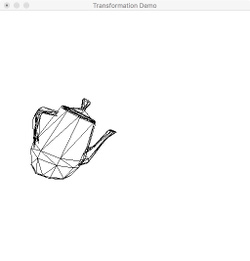
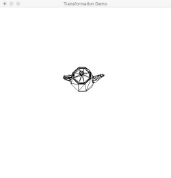
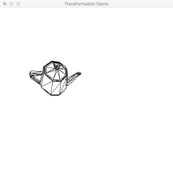
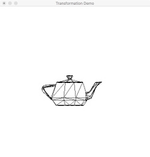
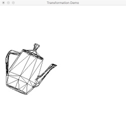
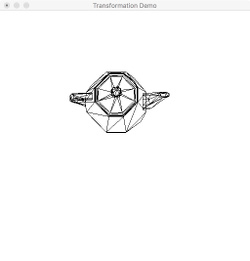
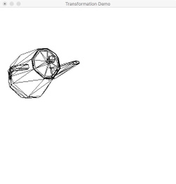

In this assignment, you will work with OpenGL and GLSL to implement 3D transformations; more specifically,
Model transformation Take vertices from model to world coordinates View transformation Take vertices from world to camera coordinates Projection transformation Take vertices from camera to clip coordinates
You are to write a vertex shader that will transform a tessellated object according to the model, camera, and projection transformations described below. The parameter values for the transformations will be provided from an OpenGL application, and will be given to your shader through the use of appropriate OpenGL API calls.
Your shader will implement both frustum and orthographic projections of a single tessellated object. The desired projection type must be given to your shader by the OpenGL application.
The driver program allows the selection of the type of projection, which camera position to use (default, or modified), and whether or not to apply object transformations. Thus, there are eight different possible views of the object, as shown here:
| Projection Type |
Default Camera | Modified Camera | ||
| No object transformations | Object transformations | No object transformations | Object transformations | |
| Frustum |  |  |  | |
| Orthographic |  |  |  |  |
As with the previous assignments, a programming environment is supplied for you. This environment uses OpenGL, GLUT, and GLEW (C/C++), and is supplied in C, C++, and python versions (the names are slightly different between the C/C++ and python versions). You are free to use either of these implementations. The environment includes the following:
Buffers/BufferSet - a support module providing OpenGL vertex and element buffer support.
Canvas - a support module that provides functions for manipulating the shape. (C/C++ only)
ShaderSetup - a support module that reads, compiles, and links GLSL shader programs.
Shapes/SimpleShape - a module containing code to draw a teapot.
Vertex - a module that describes the structure of a vertex.(C/C++ only)
Viewing/viewParams - a support module that contains code for defining and managing the model and camera transformations and sending data to the shader program.
shader.vert, shader.frag - simple GLSL 1.50 shaders.
transMain - the main function for the application.
The C version includes a module named FloatVector which provides an extensible vector holding floating-point values. Both the C and C++ versions include a file named header.mak for use with the gmakemake program on our systems to create a Makefile to simplify compilation and linking of the program.
See the Supplied Files section (below) for details on how to download the framework.
The template program is interactive; it accepts keyboard input to control the display. The following keys can be used to operate the program
| Key(s) | Function |
|---|---|
| 1 | Select the frustum projection |
| 2 | Select the orthographic projection |
|
mouse click (C/C++) space (python) |
Cycle through the different camera and transformation combinations |
| q, Q | Quit the application |
You must edit the Viewing/viewParam module and provide implementations for the following functions:
setUpFrustum( GLuint program )
Send all the appropriate parameters to the vertex shader to use a frustum projection. This includes parameters involved in the model and camera transforms.
setUpOrtho( GLuint program )
Send all the appropriate parameters to the vertex shader to use an orthographic projection. This includes parameters involved in the model and camera transforms.
clearTransforms( GLuint program )
Send all the appropriate parameters for the default model transformations (see below).
clearCamera( GLuint program )
Send all the appropriate parameters for the default camera (see below).
setUpTransforms( GLuint program,
GLfloat scaleX, GLfloat scaleY, GLfloat scaleZ,
GLfloat rotateX, GLfloat rotateY, GLfloat rotateZ,
GLfloat translateX, GLfloat translateY, GLfloat translateZ )
Sends all the appropriate parameters for model transformation.
setUpCamera( GLuint program,
GLfloat eyeX, GLfloat eyeY, GLfloat eyeZ,
GLfloat lookatX, GLfloat lookatY, GLfloat lookatZ,
GLfloat upX, GLfloat upY, GLfloat upZ )
Sends all the appropriate parameters for camera manipulation.
In all cases, the program argument is the ID of the active shader program. You will need to use this ID to gain access to the shader global variables you must modify.
In addition, you must modify the shader.vert file to implement the various transformations required of the program.
The supplied framework draws the teapot; however the initial setup will not give you a complete view of the object because no model or camera transformations have been applied to it.
The transformation values that you need to apply have already been provided by transMain through calls to the various functions in the Viewing module. The default values for these settings (i.e., what the program begins execution with and what it should return to when the model and camera settings are "clear"ed) are as follows:
Model transformations: by default, there should be no transformation of the model. Thus, all scale factors should be 1.0, and all rotation angles and all translation factors should be 0.0.
Camera settings: the default camera position should be the standard OpenGL default: eyepoint at the origin (0,0,0); lookat set to (0,0,-1); and up vector set to <0,1,0>.)
Projection settings: regardless of the projection type being used, the boundaries on the view volume will be: left -1.0, right 1.0, bottom -1.0, top 1.0, near 0.9, and far 4.5.
The driver program will occasionally apply other model and camera settings via calls to setUpTransforms() and setUpCamera(). The order of application of model transformations matters; here is the order in which they should be applied:
Once implemented, the application will allow you switch between the projection types using the '1' (frustum) and '2' (orthographic) keys, and between the various combinations of model and camera transformations using the left mouse button.
In implementing these transformations, you may either construct the matrices in your OpenGL application and send them to the shader as a matrix, or send the data required to build the matrices to the shader and have the vertex shader construct them. (It is strongly recommended that you do this in the vertex shader, even though this is much less efficient, as this eliminates the need for a separate matrix library. For more explanation of this, see the Notes section, below.)
Regardless of where you construct your matrices, all data used by the shaders (either the complete matrices or the original "raw data" used to construct them) must be copied down to the shaders from the application. In no case can you embed any of these parameters or the resulting matrices as "magic numbers" in your shaders! (This includes the view volume settings; although in this assignment the boundaries never change, this may not always be the case.)
The programming framework for this assignment is available as a ZIP archive. You can download the lab5.zip archive directly from the CONTENT->Assignment Material section of mycourses or by clicking here.
The ZIP archive contains a folder named lab5; under that are subfolders c, c++, python, and misc (as in previous lab assignments). In the C and C++ folders you'll find a file named header.mak, for use on the CS systems to help you generate a Makefile that will compile and link your program with the libraries used by the framework. See the contents of header.mak for details on how to do this.
Your implementations will be tested with a driver program which may be different from the driver found in the framework archive.
The following files must be submitted:
C: shader.vertandViewing.cC++:
shader.vertandViewing.cpppython
shader.vertandviewParams.py
You may optionally submit a modified header.mak file and/or a modified Viewing.h file. The modified header.mak should be based on the version found in the ZIP archive.
No other files from the distribution should be submitted.
If you are using a matrix library other than the ones described in the Notes section (below), you may also submit those files. (If you are one of the libraries described there, please do not submit them - the 'try' scripts will include them automatically.)
Files can be submitted to the mycourses dropbox labeled Assignment 5 - Transformation.
This assignment is worth 50 points, distributed as follows:
Creates a window: 5 points
Your code compiles, runs, and produces a stable window.
Correct object transformations: 10 points
Correct camera manipulation: 10 points
Correct frustum projection: 10 points
Correct orthographic projection: 10 points
Documentation and style: 5 points
The OpenGL and GLSL lecture notes presented in class should help you to get started on this assignment, as should the files provided with earlier OpenGL assignments.
Refer back to the "Hello, OpenGL!" programming assignment for information about obtaining and installing GLUT and/or GLEW libraries.
You have the choice of doing your matrix creation in either the vertex shader or in the OpenGL application itself. Doing this in the vertex shader is simpler, because GLSL provides all the necessary data types and operations to create and manipulate matrices; in the OpenGL application, you will need to either write or acquire a set of matrix manipulation routines. This ease does come with a price, though - creating and manipulating the matrices in the shader means that this will occur separately for every single vertex in the object being drawn, rather than just once, so doing this in the shader is less efficient. However, the objects you will be drawing in this (and later) labs are small enough that efficiency isn't really a problem, so we recommend that you create and manipulate your matrices in the shader.
If you choose to do your matrix manipulation in the OpenGL application instead of in the shader, you'll need to either create your own matrix routines, or use an open-source matrix library. The following libraries are available on the CS Ubuntu systems and are freely available for installation on your own system:
For C++ users: the Matrix TCL Pro library, also described in the midterm project assignment. Copies of the three header files for this library will be in the working directory when your submission is compiled; be sure to include the library using this statement:
#include "cmatrix"
Also for C++ users: the OpenGL Mathematics library (GLM). GLM 0.9.7.2 is installed on the CS lab machines; for greatest compatibility, you may wish to install that version on your own system.
For C users: the GNU Scientific Library (GSL). On our systems, the header files are in the standard system include directory, so you can include the GSL matrix header file (e.g.) this way:
#include <gsl/gsl_matrix.h>
The most recent version offered at the GSL web site is 2.2.1.
If you choose to use a different matrix library than one of these, use a modified version, or have written your own matrix library, remember to submit the source code for the library along with your solution to the assignment. If the library is not one you have written, please ensure that its license allows redistribution.
Regardless of whether you are doing your matrix work in GLSL or in the OpenGL application, remember that your matrices must be stored in column-major order for them to work correctly when you apply them. You can create and manipulate them that way, or you can create and manipulate them in row-major order and then transpose them before you actually use them. See the transpose option to the glUniformMatrix*() function calls in OpenGL and the transpose() function in GLSL for ways to do the transposition.